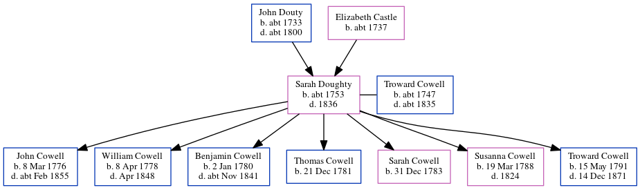

Sarah Cowell (née Doughty) c1753 - 1836
[ Home ] | [ Calendar ] | [ Surnames Index ] | [ Census Index ] | [ Family History ]The child of John Douty and Elizabeth Castle, Sarah Doughty, the 4 times great-grandmother of Nigel Horne, was born in Margate, Kent, England c. 17531,2,3, was baptized there at St John the Baptist Church on Jun 6, 1756 and also married Troward Cowell (with whom she had 7 children: John, William Castle, Benjamin, Thomas, Sarah Elizabeth, Susanna and Troward) there at St John The Baptist Church on May 30, 17755 (KFHS CD 28).
She died in 1836 in Margate1,2,3,4 and was buried there at St John the Baptist Church on Mar 7, 1836 (KFHS CD28)6.
Parents
- John was born c. 1733
- Elizabeth was born c. 1737
Children
- John was born on Mar 8, 1776
- William Castle was born on Apr 8, 1778
- Benjamin was born on Jan 2, 1780
- Thomas was born on Dec 21, 1781
- Sarah Elizabeth was born on Dec 31, 1783
- Susanna was born on Mar 19, 1788
- Troward was born on May 15, 1791
Citations
- East Kent Burial Index - Findmypast
- England Deaths & Burials 1538-1991 - Findmypast
- England, Select Deaths and Burials, 1538-1991 Ancestry.com Operations, Inc.
- Public Member Trees Online publication - Provo, UT, USA: The Generations Network, Inc., 2006.Original data - Family trees submitted by Ancestry members.Original data: Family trees submitted by Ancestry members.
- England Marriages 1538-1973 - Findmypast
- Kent Burials - Findmypast
Media
Canterbury Marriages - GBPRS/CANT/M/97111462/2
England Marriages 1538-1973 - R_848615599/2
England Marriages 1538-1973 - R_848615334/2
Kent Burials - GBPRS/CANT/D/95168174
England Deaths & Burials 1538-1991 - R_276589148
East Kent Burial Index - GBPRS/D/407025746/1
Family Tree
Generated by ged2site. Last updated on Jun 11, 2024